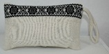
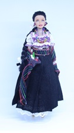
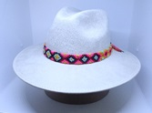

| Producto |
Imagen |
Precio |
Descripción |
| Bolsa de mano |
 |
$ 300.°° |
Bordado hecho a mano, cuenta con cadena metalica. |
| Cartera |
 |
$ 190.°° |
Bordado hecho a mano, forrada por dentro. |
| Collar de talavera |
 |
$ 350.°° |
Tejido a mano, dije de talavera con diseño por ambos lados. |
| Collar de tela |
 |
$ 300.°° |
Dije de madera tallado y pintado a mano. |
| Muñeca |
 |
$ 570.°° |
Muñeca de traje típico tlaxcalteca (San Juan Ixtenco) bordada a mano. |
| Sombrero |
 |
$ 350.°° |
Sombrero de gamuza con toquilla hecha a mano. |